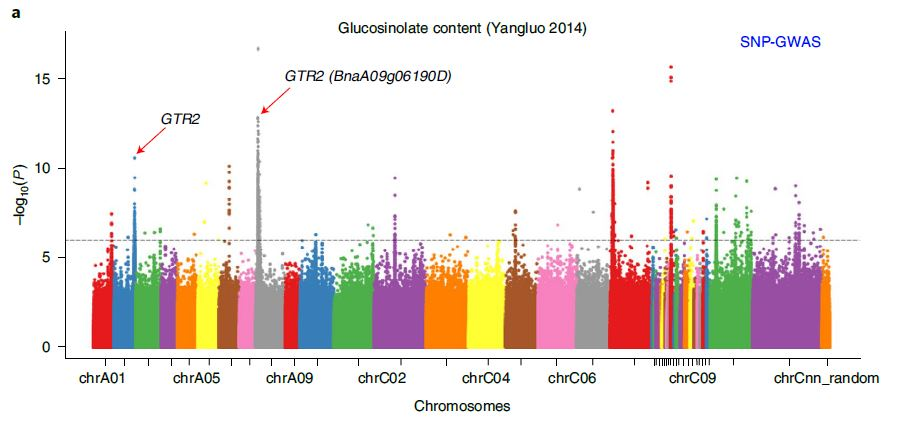
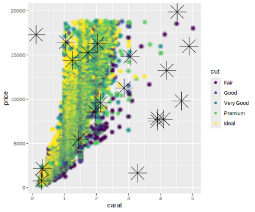

R绘图 | ggrastr：位图矢量图可以兼得
R 语言绘图导出时我们可以选择矢量图，清晰且放大不失真，但是当图中元素太多时会导致导出文件太大并且打开查看时也不太方便；那么也可以选择位图，不管图中元素有多少，在一定分辨率下图片大小不会有太大差别，但是图中的注释或一些文字信息就会失真。以下面这个曼哈顿图为例，如果全用矢量图那么肯定会给存储、编辑、查看带来不便。一个合理的方案是将图片中主体部分变成位图，也就是栅格化，坐标轴阈值线等等其他部分保持不变。Adobe illustrator 作为专业的矢量图处理工具当然可以实现，但是生成的图片还要打开二次编辑还是会令人烦恼，有没有办法在用R语言作图的过程中就完成这个处理呢？那就是今天要讲的 R 包 ggraster 了。

安装
1 | |
使用
与默认的 ggplot 作图相比，使用 ggraster 栅格化图层并不会有太多改动。仅仅把需要栅格化的图层代码放到 rasterise() 函数中就可以。
1 | |

上述代码将第一个 geom_point 生成的圆点图层栅格化，并设置分辨率是 30 dpi，而第二个 geom_point 生成的八角星的点和坐标轴等依然保持矢量图的状态。
最后感谢 @meeeeeeeeo 在统计之都论坛的回复与分享。
参考
曼哈顿图来源

R绘图 | ggrastr：位图矢量图可以兼得
https://laowang2023.cn/2024/03/15/20240315-ggraster/